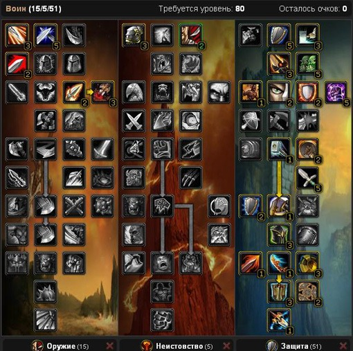
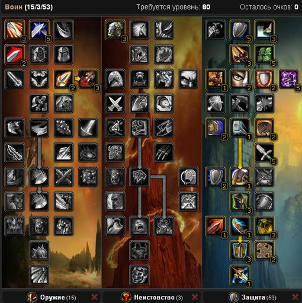
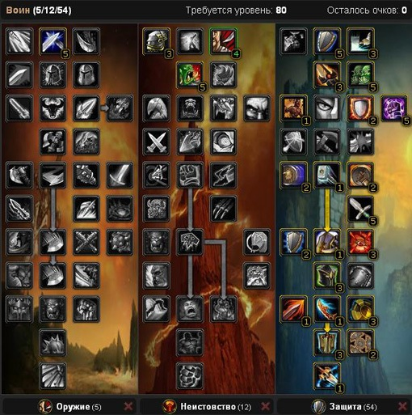

Гайд по Воину «Защита» (Protection) в WOW Lich King 3.3.5
Воин – это наиболее интересный и уникальный персонаж, так как они просто незаменимы в тактике ведения ближнего боя. Почему именно Вар-танк, да потому что вы будете постоянно в игре востребованы, потому что Прото вар носит более мощную броню, а так же имеет ряд уникальных способностей, которые делают прото вара практически неуязвимым персонажем в своём классе.
Я хочу сказать вам друзья, что у Прото вара есть 3 варианта прокачки талантов, о которых я вам расскажу. Основным билдом, который наиболее подходит для прото вара считается билд 15/5/51. Именно при такой раскладке талантов вар танк лучше всего набирает и удерживает аггро в топ рейдах по инстам. Даже дд или рдд, которые будут иметь гс намного превосходящий ваш, это не так страшно, ведь с такими талантами от вара танка босс никуда не дернется, и вы спокойно будете держать его весь бой.

Билд 2.
Следующий билд, который так же весьма не плох – это 15/3/53. С этой раскладкой вы тоже отлично будете держать аггро, а так же уменьшите КД на все способности и заклинания, что даст вам гораздо больше преимуществ.

Билд 3.
Третий билд 5/12/54 вам поможет в том случае, в собравшемся рейде нет такого персонажа как ретро паладин. Поэтому здесь и прокачан деморализующий крик.

2. Характеристики
1.Выносливость — эта характеристика является основной для любого танка. Чем она будет выше, тем будет легче хилу вас отхилить.
2.Броня — так же является главной для Прото вара. Соответственно, чем больше будет у вас брони, тем меньше будет входящий урон.
3.Рейтинг защиты — является одной из лавных характеристик. Чем она выше, тем больше шанса блокировать, парировать или уклониться от атаки.
4.Уклонение и Парирование — позволяют уклониться от любой атаки. Набирается при помощи шмота и рейтинга защиты.
5.Мастерство — снижает процент уклонения у противника.
6.Ловкость — полезный для вас стат, но он является дорогим удовольствием, чтобы тратить на него сокеты. Одна единица ловкости равна двум единицам брони. Именно поэтому такая чарка для оружия как Мангуст приобрела большую популярность.
7.Сила набирается в игре шмотом. Одна единица силы равна двум единицам силы атаки.
8.Рейтинг блокирования щитом — соответственно, чем он выше, тем чаще щит будет блокировать входящий дамаг.
3. Способности
Мощный удар щитом — эта способность является самой высокой для того, чтобы быстро набрать максимальную угрозу, поэтому старайтесь использовать её по истечению перезарядки и по проку
Реванш — использовать необходимо всегда, когда это возможно.
Удар героя — если в рейде вы являетесь главным танком, то данная способность должна постоянно заменять все ваши авто-атаки.
Сокрушение — вставляйте постоянно во все свободные гКД.
Удар грома — будет постоянно уменьшать у босса скорость атаки. На боссах вы всегда поддерживайте этот эффект, а если вы танчите треш, то используйте данную способность по КД.
Блок щитом — используйте всегда по КД.
Ни шагу назад, Глухая оборона — при использовании вы уменьшаете входящий урон и тем самым хилу легче вас отхилить. Например, на Тухлопузе вам придётся танковать по три – четыре стака, и без этих способностей это сделать очень проблематично.
Кровавая ярость — генерирует вашу ярость, и используйте всегда перед пулом.
Провокация — очень необходимая способность, при помощи которой вы сможете забирать всех переагрившихся мобов или босса
Дразнящий удар — если у вас промазала Провокация, то эта способность так же подойдет для перехвата переагрившихся мобов.
Вызывающий крик — используется, если вы танчите АоЕ.
Рывок — используется для быстрого перемещения, позволяет в начале боя набрать ярость.
Вмешательство — если в рейде кто-то из персонажей переагрил моба или босса, то эта способность поможет вам его спасти
4. Ротация
Запомните агро вара танка зависит от абилок. Ни критов, ни арп, ни дамага, а именно абилок.
Расставляю их в порядке приоритета агро:
1 —Героический бросок — ваша первая абилка при пуле, дальше она вам почти не понадобиться
2 — Мощный удар щитом — всегда по КД — самая мощная агро абилка из всех, требует ярости
3 —Удар героя — прожимайте постоянно (у меня стоит на цифре 2, я жму ее постоянно, абилка без ГКД, но зависит от скорости удара, сами поймете что я имею ввиду, когда будете юзать)
4 — Сокрушение — накидайте доты после 0, 1 и 2, дальше обновляйте доты и просто наносите ей дамаг
5 — Удар грома — по КД. На многих боссах проходит эффект от этой абилки. + это ваша основная агро абилка на большом скоплении треша.
Что еще надо юзать:
Реванш по КД — займет мало ярости, ударит врага рядом, да и неплохо так дамажит. Забавная абилка.
Блок щитом по КД — дамага прилетать вам будет меньше, ярость будет прибавляться
Кровавая ярость по КД (идет + поглощения урона при 4 т10)
Деморализующий крик — обновляйте, действует на всех боссов, по вам будет прилетать чуть меньше дамага
Глухая оборона — в моменты когда надо прожиматься — классная штука, жаль что КД большое
Ни шагу назад — в моменты когда надо немного прожаться или выжить
Ударная волна по КД, но всегда беречь, если можно использовать на треше (валькиры и адды на Личе, адды на Саурфанге, личинки и подавители на Валитрии)
Командирский крик — обновляйте для рейда и себя
Кровопускание — обновляйте
Провокация — абилка, которая спасает матерых дэпээсеров с пеной изо рта от смерти. То есть, вы должны их спасть этой абилкой. Всегда держите ее НЕ заюзанной. Ее надо юзать мгновенно, когда босс срывается на другого игрока. У меня обычно стоит на кнопке 1.
Бдительность — волшебная абилка вара танка. Именно благодаря этой абилке так ценятся вары в цлк. Вешается чаще на втором танке, так как ему прилетает постоянно, а значит ваша провокация будет постоянно на готове. Обязательно вчитайтесь в эту абилку, подумайте когда ее вешать, кому, на каком боссе и почему. Объяснить займет несколько абзацев. Лучше поймите сами.Удар щитом — ваша прерывающая касты абилка — долгое КД, но вам пригодится. Юзайте только когда надо прервать каст, или замедлить моба. Например, валькир на Личе.
Удар щитом — ваша прерывающая касты абилка — долгое КД, но вам пригодится. Юзайте только когда надо прервать каст, или замедлить моба. Например, валькир на Личе.
Вызывающий крик — юзайте ТОЛЬКО когда надо спасать рейд от большого количества мобов. Большое КД.
Оглушающий удар — прерывает абилки мобов, которые прервать другим способом нельзя. Стрельбу лучниц треша, берс у Шаркающего ужаса, например.
5. Символы
Большие:
Символ блокирования — дает вам +10% к показателю блокировки при использовании «Мощный удар щитом».
Символ реванша — позволяет использовать способность «Удар героя». Вар теряет много ярости после использования реванша. Данный символ будет восстанавливать ваше аггро и вы не будете испытывать недостатка в аггро.
Символ сокрушения — удваивает эффект «Раскол брони».
Малые:
Символ удара грома — при использовании «Удар грома» снижаются затраты ярости на данное заклинание и увеличивается радиус действия данного заклинания. Важнейший малый символ для Вара танка.
Символ боевого крика — способность «Боевой крик» будет действовать на 2 минуты дольше и это очень хорошо для рейдов.
Символ властности — тоже неплох, так как ваш командирский крик так будет увеличен по времени действия на 2 минуты.
6. Чары
Голова — Магический знак стойкого защитника
Плечи — Великое начертание вершины
Грудь — Формула чар для нагрудника — все характеристики VII
Штаны — Накладки для поножей из снежной шкуры
Плащ — Чары для плаща — ткань титанов или Чары для плаща — могучая броня
Перчатки — Накладки из толстой борейской кожи.
На запястья – Выносливость VI.
Оружие — Мангуст
Щит — Формула чар для щита — выносливость IV.
7. Камни
Мета — Алмаз строгого землеправителя на +32 к выносливости и +2% к броне от экипировки.
Синие — Цельный величественный циркон +30 к выносливости.
Красные —Страхолит стража: +10 к мастерству и +15 к выносливости, или же Страхолит защитника: +10 к рейтингу парирования и +15 к выносливости.
Желтые —Монаршее око Зула: +10 к рейтингу уклонения и +15 к выносливости.
2) Нон сет Латные боевые перчатки Талдарама или Наплечье костяного командира,с первым вариантом у нас будет побольше парирования,со вторым брони и стамины.(мой выбор Латные боевые перчатки Талдарама)
3) Шея Малахитовая петля без данной шеи очень тяжело достичь капа меткости (без потерь в других статах)
10) Серьги Безупречный клык Синдрагосы и Проржавевший костяной ключ,для сборки брони Неизвестный орган и Окаменелая сумеречная чешуя
11) Оружие Митриос, наследие Бронзоборода без вариантов.
12) Щит Мерзлая стена ледяной цитадели без вариантов.
13) Огнестрельное Карабин охотника снов из-за блокирования. Могу только дать еще несколько советов:
Не в коем случае не одевайте вара по принципу больше стамины это верная смерть.
Мой выбор это баланс между стамой,парированием и броней,с небольшим уклоном в парирование,на боссах с сильным физ.дамагом стоить одеть серьги на броню Неизвестный орган и Окаменелая сумеречная чешуя
9. Бонусы от профессий
Тут нет определенного выбора или какогото приоритета. Все качают разные профы, так как некоторые хотят с помощью профы разбогатеть, некоторый действительно стремятся поднять свои основные характеристики. Мой выбор — это ювелирка и горное дело, которое поднимает хп на 800 единиц. Юва же дает возможность ставить великолепные камушки.
Удачи вам в рейдах, хороших рук и и отличного персонажа Прото Вара. Вар танк действительно способен достигнуть высот только в том случае, когда вы цените и любите своего перса.
10. Еда и Химия
Химия:
Зелье несокрушимости — в основном используют это зелье на серьезных боссах. Оно прибавит вам на две минуты + 3500 единиц брони.
Настой каменной крови — увеличит на час ваше ХП на 1300 единиц. Тут, я думаю, останемся без комментарий.
Еда:
Луциан особого приготовления — кушем в том случае, если у вас рейтинг мастерства больше 40 – 50, а меткости не хватает.
Люторожий змеестейк — кушаем во всех оставшихся случаях.
Остальная еда для Прото вара в основном вся одинаковая. Просто прибавляет + 40 единиц к выносливости
12. Макросы
К примеру Саруфанг. При появлении чудовищ весьма полезно будет сначала запустить в них ударную волну, а потом использовать макрос. Или наоборот. Итоговая разница стана будет 0.5 секунды — дело вкуса
/ц Кровавое
/закл Оглушающий удар
/ц Саурфанг
На Синдрагосе после сброса дебафа за глыбой»
/ц второй_танк
/закл Вмешательство
/ц Синдрагоса
В общем смотрите сами, решайте сами. Макрос = экномия нажатых кнопок = время
Вмешательство
1 кнопкой: на друж цель — вмешательство, на вражену Провокация, с шифтом перехват
Каст Кровавой ярости(т10 сэт бонус с 4-х вещей) — и вам не страшен первый удар